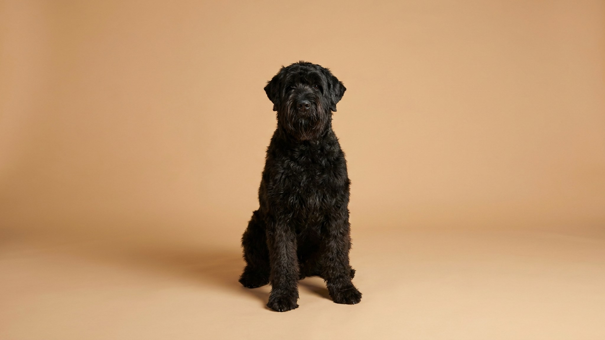

Русский чёрный терьер вырос из советского военного проекта и создавался не для выставок, а для работы в любых условиях. Это сильная, умная и самостоятельная порода — и именно поэтому она подходит далеко не всем. Ниже — честный портрет РЧТ: характер, нагрузки, уход за жёсткой шерстью и воспитание.
🐾 У вас русский чёрный терьер?
AnimaLife соберёт уход под породу: к каким болезням есть склонность, что проверять по возрасту, чем кормить и когда пора к врачу. Бесплатно, прямо в мессенджере.
Собрать план ухода → Собрать в MAX →
У вас iPhone? AnimaLife есть в App Store
Русский чёрный терьер — территориальная порода с развитым инстинктом защиты. Он уравновешен с семьёй, сдержан с чужими и хорошо переносит одиночество — но только когда достаточно нагружен. Без работы РЧТ становится тревожным и деструктивным. Это не собака, которую можно «просто выгулять». Порода создавалась в 1940–1950-х на базе 17 пород — доберман, ротвейлер, гигантский шнауцер в основе — и этот генетический коктейль даёт характер, который требует опыта.
Минимум — 2 часа активного движения в день. Речь не о спокойных прогулках на поводке, а о реальной физической и умственной нагрузке: апортировка, работа по следу, управляемые игры. РЧТ с избыточной энергией ищет выход сам — и этот выход хозяину не понравится. Взрослая собака весом 45–65 кг потребляет энергию соразмерно — корм для активных крупных пород, норма обсуждается с ветеринаром с учётом веса и нагрузки.
Жёсткая двойная шерсть русского чёрного терьера требует тримминга — выщипывания мёртвого волоса вручную или специальным инструментом. Машинка размягчает текстуру и меняет окрас на серый. Вычёсывание нужно 2–3 раза в неделю, тримминг — 2–3 раза в год у грумера. Особое внимание: борода и усы накапливают влагу и загрязнения, их протирают после каждой еды и прогулки. Колтуны в паховых зонах и подмышках — следствие пропущенной недели расчёсывания, убирать их потом болезненно.
Русский чёрный терьер хорошо обучается, но требует от хозяина уверенности и системности. Жёсткие методы дают обратный эффект — порода запоминает обиды и начинает сопротивляться. Раннее начало обучения (с 8–10 недель), чёткие границы и позитивное подкрепление — основа рабочего контакта. Если опыта работы с крупными рабочими породами нет, курс с кинологом обязателен на старте. Оптимальный формат — еженедельные занятия в группе плюс ежедневные короткие тренировки дома по 10–15 минут.
У породы есть предрасположенности, о которых важно знать заранее. Крупный корпус создаёт нагрузку на суставы — дисплазия тазобедренного сустава встречается, особенно при бесконтрольной нагрузке в щенячестве. Регулярные плановые осмотры у ветеринара и контроль веса — базовые правила содержания РЧТ. Обсудите план профилактических осмотров для вашей собаки с ветеринаром при первом визите.
Материал носит информационный характер и не заменяет очную консультацию ветеринара.
🐾 Ваш питомец — русский чёрный терьер?
Заведите профиль в AnimaLife: приложение запомнит породу, возраст и вес и будет подсказывать по уходу именно для неё. Вопросы AI-ветеринару — круглосуточно и бесплатно.
Завести профиль → Завести в MAX →
У вас iPhone? AnimaLife есть в App Store
🐾 Понравился разбор?
Подпишитесь на канал — каждый день разбираем по одному тревожному симптому у кошек и собак: что в пределах нормы, а когда пора к врачу. Подпишитесь, чтобы не пропустить разбор, который может спасти здоровье вашего питомца.